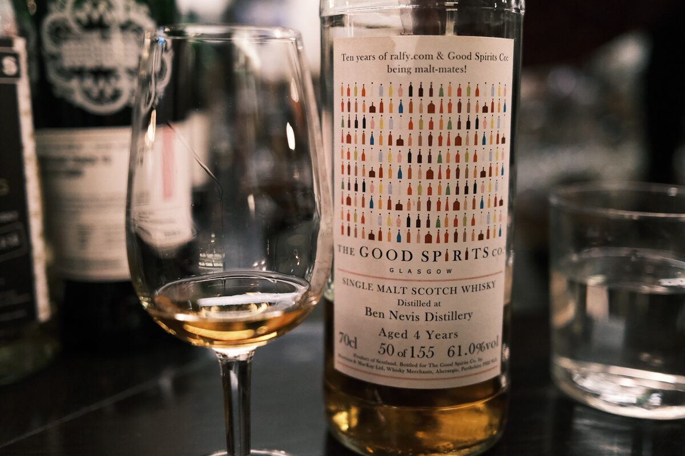

Ben Nevis 2015 The Good Spirits Co. 4 years 61% (sherry hogshead)
A 2015 vintage, so I’m expecting peat and sherry. This one was bottled for that alliteration aficionado over at ralfy.com.
Colour Deep amber.
Nose Big and oily, savoury. Earthy, dark chocolate and dried fruits. Smells peated for sure: woody highland peat. Smoke. Sooty. Something grassy. Strawberry liquorice.
Palate Ash and soot. Tart lemon acidity moving into jammy notes. Stewed fruits, cinnamon and cloves. A bit of mulled cider. Brown sugar, menthol and woody bitterness. Real thick and oily.
Finish Smoke. Ashy, woody peat, dried fruits. Roasted raisins. A squeeze of lemon juice. Malty. Warming and long. Dark chocolate. Big smoke!
Comments Really great 2015 Bennie. What’s the story behind that vintage (or parcel, one imagines)? 88/100.

Posted by Dominic on 14 Jun 2021